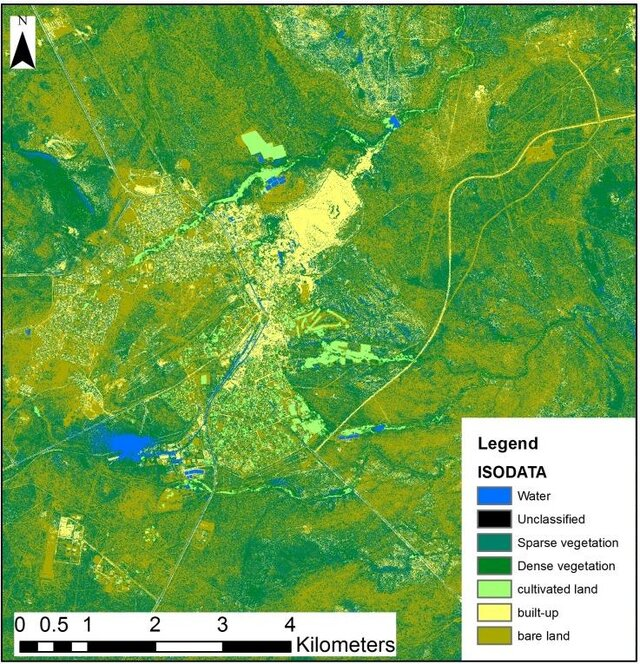
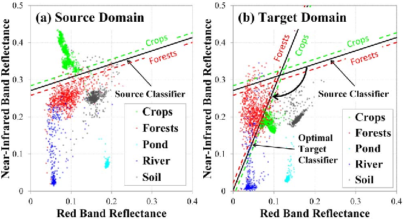
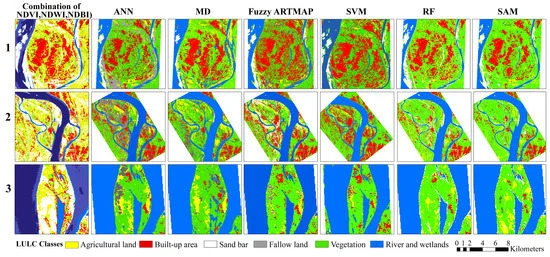

6 Classification I: Making sense of the pixel
6.1 Summary
We continue the journey in Remote Sensing and Earth Observation analysis by exploring various ways to derive insights from this data and imagery using Machine Learning. These insights may come from Classification and Regression Trees (CART) to Random Forests and more cutting-edge Object-based Image Analysis (OBIA) methods. Many of these methods can be deployable natively within Google Earth Engine, further enhancing the platform’s attractiveness to geospatial data scientists.
For this entry, we will examine a few key supervised and unsupervised classification methods specific to remote sensing to classify every pixel in the image into one of the pre-defined categories. Then, in the next entry, we will discuss advanced image classification methods such as OBIA and model validation and calibrationcla#.
6.1.1 Unsupervised classification
Identifying land cover classes unknown beforehand by clustering and labelling based on the spectral info it has. It is most suitable for exploratory analysis when examining an unfamiliar feature space. Three popular algorithms are K-mean, DGSCAN clustering and ISODATA.
K-means: centroid-based clustering method. It groups pixels/objects into pre-defined numbers of groups based on their spectral properties and predetermined distance metrics.
DBSCAN: a density-based spatial clustering method. It helps identify clusters of objects or features in an image where the number of classes is unknown.
ISODATA: stands for “Iterative Self-Organizing Data Analysis Technique.” It is an iterative method for clustering data elements into different classes while allowing the merging of too similar clusters or elongated clusters in the feature space.

6.1.2 Supervised classification
Teaching classifiers to learn to recognise patterns so that they can place labels on new data. It could be pixels, objects, or textures. My impression is that supervised algorithms are more popular than unsupervised ones in the realm of remote sensing for Land Use and Land Cover classification because of their deterministic nature.
Classification and Regression Tree (CART): Takes and predicts discrete values by putting all values through a series of splits with the goal of minimising GINI impurity within each leaf node until a stopping criteria (min members, max depth).
Random Forest: basically an ensemble of CART (hence, a forest) from various bootstrap samples of the data (hence, random). Data are classified through a majority decision from all trees.
Maximum Likelihood: assumes that each class in each band are normally distributed and calculates the probability that a given pixel belongs to a specific class. We can set a prior probability threshold to support the classification.
Support Vector Machine: A linear binary classifier. Essentially, this method tries to construct a linear divider (or ‘support vector’) in the feature space to separate the data points into different classes by maximising the margin between the two classes or minimising wrongly classified points (‘soft margin’)

It is worth noting that classification in remote sensing requires some extra considerations. Besides the fact that there are trade-offs between interpretability and accuracy, just like in other realms, analysts also have to decide whether to perform fuzzy classification (partial membership in multiple classes) and whether we are classifying pixels or objects.
6.2 Application
As seen from the previous section, the most popular use case of classification seems to be land use and cover (LULC) classification. The purpose is to quantify urban or rural changes towards scientific or policy-making ends. Methodology varies from one locale to another depending on the nature of the remote sensing data product available, endogenous factors like vegetation species, urban roofs, etc.
- For example, this study by Talukdar et al. (2020) compared six different algorithms for classifying LULC from satellite imagery (supervised classification). These are Support Vector Machine, Minimum Distance, Random Forest, Fuzzy ARTMAP, Artificial Neural Networks, and Spectral Angle Mapper. Among those tested, although Artificial Neural Networks (ANN) was a strong performer, the study concludes that Random Forest is the best option for this particular environment (West Bengal, India), having achieved the highest accuracy (0.89).

- Another study by Jansen and Di Gregorio (2003) on Kiambu, Kenya, delved into the idea that supervised classification requires a robust set of classes to train any algorithm that varies depending on the researchers’ needs, and that LU/LC are inherently linked but different concepts. This research proposes a method to turn a land cover map into a more useful land use map. Land cover describes physical features (forest, water, etc.) while land use describes how humans interact with those features (agriculture, urban areas, etc.). The final product is a detailed land use map where users can customize how the data is grouped based on their needs.

LULC classification in the urban analytics context, when combined with a change detection algorithm, can be used to analyse urban sprawl, urban heat islands, urban physical change, urban climate modelling, and other socio-ecological studies.
6.3 Reflection
Upon reaching this part of the module, a lot of fragmented pieces of knowledge from different modules I had gathered started to come together nicely. At the start of the module, we learned about the science of remote sensing and the different types of RS data products, which may or may not have gone through corrections and enhancements. However, the final product we receive is only the beginning and opens up a plethora of possibilities for how to bring them into actual academic and real-world applications, such as LULC classification! At the same time, we have built up knowledge about Machine Learning algorithms in a generic context and are now able to see them in action with remote sensing data.
Finally, all this would not have been possible if we did not know how to pose the right research question pertaining to urban spatial properties that can only be solved with RS and not others, e.g. LULC change detection. Besides much theory, being able to apply it seamlessly via Google Earth Engine has made what had seemed inaccessible thus far accessible to the general public. With the advancement in the field, RS data can truly level the playing field, especially for data-poor localities (i.e., with few official spatial datasets)
One remaining question I have before discussing the next few topics is about imputation. Many of the possibilities offered by Remote Sensing data use relatively high spatial, temporal, and/or spectral resolution. For example, pixel-based classification accuracy is especially reliant on spatial resolution, and some change detection goals need high temporal frequency, even hourly. Are there ways to make the most out of free/low-cost RS data with lower-than-optimal resolution while not sacrificing accuracy?